통신선로기능사 (2016-03-05 기출문제)
1과목: 전기전자개론
1. 1.5[V] 건전지 4개가 직렬로 연결된 전원에 부하저항이 30[Ω]인 전구 2개가 병렬 연결되었을 때 전구 한 개에 흐르는 전류의 값은 얼마인가?
- 0.1[A]
- 0.2[A]
- 0.4[A]
- 0.5[A]
(정답률: 70%)

2. 전지의 방전 이후에 충전하여 다시 사용할 수 있는 전지가 아닌 것은?
- 납축전지
- 알칼리축전지
- 1차전지
- 2차전지
(정답률: 61%)
3. 정전용량이 C[F]인 회로에 v = Vmsinωt의 정현파 전압을 인가할 때 전압과 전류에 대한 위상의 설명으로 맞는 것은?
- 전류가 전압보다 위상이 90° 늦다.
- 전압이 전류보다 위상이 90° 늦다.
- 전류가 전압보다 위상이 180° 늦다.
- 전압과 전류의 위상이 같다.
(정답률: 68%)
4. 220[V], 50[Hz]인 교류전원에 100[mH]인 코일을 부하로 연결하였을 때, 이 부하의 리액턴스 값은 약 얼마인가?
- 31.4[Ω]
- 66.2[Ω]
- 100[Ω]
- 220[Ω]
(정답률: 77%)
5. 다음 중 자석의 자기현상에 대한 설명으로 틀린 것은?
- 철심이 있으면 자속 발생이 어렵다.
- 자력선은 N극에서 나와서 S극으로 들어간다.
- 서로 다른 극 사이에는 흡인력이 작용한다.
- 자력은 거리의 제곱에 반비례한다.
(정답률: 77%)
6. 다음 중 배리스터의 주된 용도는 무엇인가?
- 전력증폭
- 출력전류 조정
- 서지 전압에 대한 회로의 보호
- 전압증폭
(정답률: 69%)
7. 다음 중 정류기의 평활회로가 활용되는 장치는 무엇인가?(문제 오류로 정답이 정확하지 않습니다. 정답지를 찾지 못하여 임의 정답 1번으로 설정하였습니다. 정답을 아시는 분께서는 오류 신고를 통하여 정답 입력 부탁 드립니다.)
- 저역 여파기(LPF)
- 대역 여파기(BF)
- 대역 소거 여파기(BEF)
- 고역 여파기(HF)
(정답률: 80%)
8. 다음 중 콘덴서 입력형 평활회로에 대한 설명으로 틀린 것은?
- 용량 C가 클수록 정류기에 흐르는 전류의 크기가 증가한다.
- 용량 C가 클수록, 정류소자에 흐르는 전류의 기간은 짧을수록 전류의 크기는 감소한다.
- 용량 C가 클수록 출력전압의 맥동률은 작아진다.
- 정류기(다이오드)에 흐르는 전류는 펄스형이다.
(정답률: 44%)
9. 다음 붕 부궤환(Negative Feedback) 증폭기를 바르게 설명한 것은?
- 궤환되는 신호가 입력신호와 반대인 위상을 갖는 회로
- 궤환되는 신호가 입력신호와 반대인 주파수을 갖는 회로
- 궤환되는 신호가 입력신호와 반대인 진폭을 갖는 회로
- 궤환되는 신호가 입력신호와 반대인 전압을 갖는 회로
(정답률: 52%)
10. 차동 증폭기에서의 동상신호제거비(Common Mode Rejection Ratio)에 대한 설명 중 옳은 것은? (단, Ad는 차동이득, Ac는 동상이득임)
- Ad는 작을수록 Ac는 클수록 좋다.
- Ad와 Ac가 작을수록 좋다.
- Ad와 Ac가 클수록 좋다.
- Ad는 클수록 Ac는 작을수록 좋다.
(정답률: 52%)
11. 발진회로를 설계할 때 고려해야 할 가장 중요한 사항은?
- 선택도
- 충실도
- 안정도
- 증폭도
(정답률: 77%)
12. 다음 그림과 같은 발진회로에서 발진 주파수는?(문제 오류로 정답이 정확하지 않습니다. 정답지를 찾지 못하여 임의 정답 1번으로 설정하였습니다. 정답을 아시는 분께서는 오류 신고를 통하여 정답 입력 부탁 드립니다.)
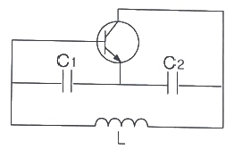
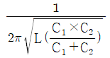
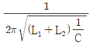
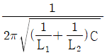
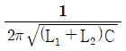
(정답률: 75%)
13. 다음 중 PCM(펄스부호변조) 방식의 장점이 아닌 것은?(문제 오류로 정답이 정확하지 않습니다. 정답지를 찾지 못하여 임의 정답 1번으로 설정하였습니다. 정답을 아시는 분께서는 오류 신고를 통하여 정답 입력 부탁 드립니다.)
- 잡음에 강하다.
- 동기가 유지되어야 한다.
- 고밀도화(LSI)에 적합하다.
- 가공 처리가 용이하다.
(정답률: 86%)
14. 신호주파수가 3[kHz], 최대 주파수 편이가 15[kHz] 일 때 변조지수는 얼마인가?
- 18
- 10
- 5
- 45
(정답률: 75%)
15. 플립플롭은 몇 비트 기억소자인가?
- 1비트
- 2비트
- 3비트
- 4비트
(정답률: 66%)
2과목: 전자계산기일반
16. 시분할 시스템(TSS : Time Sharing System)을 실현한 것은 몇 세대인가?
- 제 1세대
- 제 2세대
- 제 3세대
- 제 4세대
(정답률: 71%)
17. 다음 제어장치의 구성요소가 아닌 것은?
- 명령레지스터(Instruction Register)
- 명력해독기(Instruction Decoder)
- 프로그램 계수기(Program Counter)
- 일괄처리(Batch Processing)
(정답률: 68%)
18. 다음 중 기억장치의 특성을 결정하는 요소가 아닌 것은?(문제 오류로 정답이 정확하지 않습니다. 정답지를 찾지 못하여 임의 정답 1번으로 설정하였습니다. 정답을 아시는 분께서는 오류 신고를 통하여 정답 입력 부탁 드립니다.)
- 최대 시간(Max Time)
- 엑세스 시간(Access Time)
- 사이클 시간(Cycle Time)
- 대역폭(Bandwidth)
(정답률: 72%)
19. 다음 중에서 값이 가장 큰 수는?(문제 오류로 정답이 정확하지 않습니다. 정답지를 찾지 못하여 임의 정답 1번으로 설정하였습니다. 정답을 아시는 분께서는 오류 신고를 통하여 정답 입력 부탁 드립니다.)
- (1111)2
- (14)8
- (12)10
- (C)16
(정답률: 82%)
20. 2진수 1001을 1의 보수(1's Complement) 방식으로 표현한 것은?(문제 오류로 정답이 정확하지 않습니다. 정답지를 찾지 못하여 임의 정답 1번으로 설정하였습니다. 정답을 아시는 분께서는 오류 신고를 통하여 정답 입력 부탁 드립니다.)
- 0110
- 0111
- 1010
- 1000
(정답률: 77%)
21. 논리식
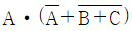
를 간략히 표현한 것은?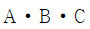
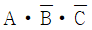
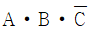
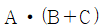
(정답률: 78%)
22. 순서도의 기본 유형 중 주어진 조건을 만족할 때까지 일정한 내용을 반복 수행하는 형태는?
- 직선형
- 반복형
- 분기형
- 혼합형
(정답률: 89%)
23. 다음 중 컴퓨터로 처리되는 부분에 중점을 두어 작성하는 순서도는?(문제 오류로 정답이 정확하지 않습니다. 정답지를 찾지 못하여 임의 정답 1번으로 설정하였습니다. 정답을 아시는 분께서는 오류 신고를 통하여 정답 입력 부탁 드립니다.)
- 프로그램 순서도
- 시스템 순서도
- 일반 순서도
- 상세 순서도
(정답률: 87%)
24. 다음 중 운영체제(Operating System)의 목적으로 알맞지 않은 것은?(문제 오류로 정답이 정확하지 않습니다. 정답지를 찾지 못하여 임의 정답 1번으로 설정하였습니다. 정답을 아시는 분께서는 오류 신고를 통하여 정답 입력 부탁 드립니다.)
- 다양한 컴퓨터 모델 제작
- 처리 능력의 향상
- 신뢰도의 향상
- 응답처리 시간의 단축
(정답률: 81%)
25. Excel 프로그램에서 내장함수 'COUNTIF'가 갖는 기능은?(문제 오류로 정답이 정확하지 않습니다. 정답지를 찾지 못하여 임의 정답 1번으로 설정하였습니다. 정답을 아시는 분께서는 오류 신고를 통하여 정답 입력 부탁 드립니다.)
- 주어진 조건을 만족하는 셀의 개수를 구하는 함수
- 주어진 셀 내의 숫자를 모두 합하는 함수
- 주어진 셀 내의 숫자를 모두 빼는 함수
- 주어진 셀 내의 숫자를 모두 나누는 함수
(정답률: 80%)
26. 유선전송 측정에서 디지털 측정 항목별 약어를 설명한 것 중 틀린 것은?
- 비트 오율 : Bit Error Rate
- 블록 오율 : Blcok Error Rate
- 오류 초율 : Error Free Seconds
- 과오류 초율 : Severely Error Seconds
(정답률: 76%)
27. 어느 전송선로의 입력측 전압이 1[V], 출력측 전압이 0.01[V]였다면 선로의 감쇠량은 몇 [dB] 인가?
- -1 [dB]
- -10 [dB]
- -20 [dB]
- -40 [dB]
(정답률: 54%)
28. 유한길이의 고주파 선로에서 무손실 선로의 조건을 분포회로 정수로 표현한 것은? (단, R : 저항, L : 인덕턴스, C : 정전용량, G : 콘덕턴스)
- R = G = 0
- L = C = 1
- RC = LG
- RL = GC
(정답률: 70%)
29. 다음 중 펄스 변조 방식이 디지털인 것은?(문제 오류로 정답이 정확하지 않습니다. 정답지를 찾지 못하여 임의 정답 1번으로 설정하였습니다. 정답을 아시는 분께서는 오류 신고를 통하여 정답 입력 부탁 드립니다.)
- 펄스진폭변조
- 펄스폭변조
- 펄스수변조
- 펄스위상변조
(정답률: 78%)
30. 특정한 디지털 전송시스템에서 NRZ 방식의 전송테이터율이 38.2[Mb/s] 이다. 다른 조건이 같다면 RZ 방식의 전송데이터율을 계산하면 얼마인가?
- 68.4[Mb/s]
- 38.2[Mb/s]
- 19.1[Mb/s]
- 5.488[Mb/s]
(정답률: 79%)
3과목: 통신선로일반
31. 다음 중 광섬유(Fiber Optic) 전송방식의 신호 변환과정을 바르게 설명한 것은?(문제 오류로 정답이 정확하지 않습니다. 정답지를 찾지 못하여 임의 정답 1번으로 설정하였습니다. 정답을 아시는 분께서는 오류 신고를 통하여 정답 입력 부탁 드립니다.)
- 음성 – 전기펄스 – 광펄스- 전기펄스 - 음성
- 음성 – PAM펄스 – PCM펄스 - 음성
- 음성 – PAM펄스- PCM펄스 – PAM펄스 - 음성
- 음성 – 광펄스- 전기펄스 – 광펄스 – 음성
(정답률: 81%)
32. T1회선과 E1회선의 전송속도로 알맞은 것은?(문제 오류로 정답이 정확하지 않습니다. 정답지를 찾지 못하여 임의 정답 1번으로 설정하였습니다. 정답을 아시는 분께서는 오류 신고를 통하여 정답 입력 부탁 드립니다.)
- T1 : 1.544[Mbps], E1 : 2.048[Mbps]
- T1 : 3.488[Mbps], E1 : 5.422[Mbps]
- T1 : 51.84[Mbps], E1 : 44.736[Mbps]
- T1 : 155.520[Mbps], E1 : 622.080[Mbps]
(정답률: 84%)
33. 10 Base 2에 대한 설명으로 적합한 것은?(문제 오류로 정답이 정확하지 않습니다. 정답지를 찾지 못하여 임의 정답 1번으로 설정하였습니다. 정답을 아시는 분께서는 오류 신고를 통하여 정답 입력 부탁 드립니다.)
- 전송속도는 10[Mbps] 이다.
- 비차폐(UTP) 케이블이다.
- 최대 세그먼트 거리는 500[m]이다.
- RJ-45 커넥터를 사용한다.
(정답률: 78%)
34. UTP 케이블에 8Pin Data용으로 연결하고자 할 때 모듈러 잭과 플러그의 규격은?
- RJ-11
- RJ-45
- RJ-63
- RJ-100
(정답률: 73%)
35. STP 케이블을 UTP 케이블과 비교하였을 때 틀린 것은?
- 금속박막으로 둘러싸인 차폐된 구조이다.
- 심선끼리의 혼선이 적다.
- 외부 전자파의 간섭이 최대화 된다.
- 케이블링 취급이 어렵다.
(정답률: 66%)
36. 다음 중 단일모드 광섬유의 색분산에 해당되는 것은?
- 흡수분산
- 재료분산
- 모드분산
- 편광분산
(정답률: 70%)
37. 광섬유 코어의 굴절률이 1.45이면, 광섬유에서 빛의 속도는 얼마인가?(문제 오류로 정답이 정확하지 않습니다. 정답지를 찾지 못하여 임의 정답 1번으로 설정하였습니다. 정답을 아시는 분께서는 오류 신고를 통하여 정답 입력 부탁 드립니다.)
- 2.069×108[m/s]
- 1.0345×108[m/s]
- 2.069×106[m/s]
- 3.0×108[m/s]
(정답률: 82%)
38. 다음 중 광통신시스템의 구성요소가 아닌 것은?
- 광송신기
- 광섬유
- 광대역 안테나
- 광수신기
(정답률: 83%)
39. 광케이블을 접속할 때 광섬유를 아크(Arc) 방전으로 녹여 접속하는 방식은?
- 적외선접속
- 융착접속
- 기계식접속
- 커넥터접속
(정답률: 87%)
40. 다음 중 관로 공수를 구하는 공식으로 옳은 것은?
- (시내케이블 조수 + 중계 및 시외케이블 조수 + 기타) - 환경배율 + 동축케이블 및 직매케이블 조수 + 예비관
- (시내케이블 조수 + 중계 및 시외케이블 조수 + 기타) + 환경배율 + 동축케이블 및 직매케이블 조수 + 예비관
- (시내케이블 조수 + 중계 및 시외케이블 조수 + 기타) × 환경배율 + 동축케이블 및 직매케이블 조수 + 예비관
- (시내케이블 조수 + 중계 및 시외케이블 조수 + 기타) ÷ 환경배율 + 동축케이블 및 직매케이블 조수 + 예비관
(정답률: 70%)
41. 다음 중 지하케이블의 포설 작업시 케이블의 비틀어짐을 방지하기 위해 사용되는 것은?
- 포설용 도관
- 케이블 인망
- 나팔형 보호관
- 케이블 연반철
(정답률: 73%)
42. 광케이블의 루트 선정시 조건으로 틀린 것은?
- 최단거리 및 인입거리가 짧은 구간
- 교통이 편리하고 유지보수가 쉬운 구간
- 풍수해 등 재해의 염려가 없는 구간
- 중계소 등 기설시설과 관계없는 구간
(정답률: 74%)
43. 회로정소의 단위 길이 당 값의 표현이 틀린 것은?
- R[Ω/km]
- L[H/km]
- G[Ω/km]
- C[F/km]
(정답률: 70%)
44. 가공선로에서 전산의 단위 길이당 하중이 2[kg/m], 전주간 거리를 40[m], 전선의 장력이 2,000[kg] 일 때 이 선로의 이도(D)는?
- 10[cm]
- 20[cm]
- 30[cm]
- 40[cm]
(정답률: 68%)
45. 다음 선로시설의 보전대책 중 위해 등의 방지 대책이 아닌 것은?
- 전기통신설비는 이에 접속되는 다른 전기통신설비를 손상시키거나 손상시킬 우려가 있는 전압 또는 전류가 송출되는 것이어서는 아니 된다.
- 전기통신설비는 이에 접속되는 다른 전기통신설비의 기능에 지장을 주거나 지장을 줄 우려가 있는 전기통신신호가 송출되는 것이어서는 아니 된다.
- 전력선과의 접속부분을 안전하게 분리하고 이를 연결할 수 있는 기능은 없어도 된다.
- 전력선으로부터 이상전압이 유입된 경우 인명·재산 및 설비 자체를 보호할 수 있는 기능이 있어야 한다.
(정답률: 75%)
4과목: 선로설비기준
46. 우리나라의 방송통신에 관한 기본계획의 수립은 누가하는가?(관련 규정 개정전 문제로 여기서는 기존 정답인 4번을 누르면 정답 처리됩니다. 자세한 내용은 해설을 참고하세요.)
- 방송국
- 국무총리
- 방송통신사업자
- 미래창조과학부장관과 방송통신위원회
(정답률: 77%)
47. 방송통신사업자는 그 소관 방송통신사에 관하여 방송통신재난에 발생했을 경우 그 현황, 원인, 응급조치 내용을 지체 없이 누구에게 보고해야 하는가?
- 지방단체장
- 국무총리
- 산업통상자원부장관
- 과학기술정보통신부장관
(정답률: 69%)
48. 통신기술의 진흥과 정부의 시책이 아닌 것은?(문제 오류로 정답이 정확하지 않습니다. 정답지를 찾지 못하여 임의 정답 1번으로 설정하였습니다. 정답을 아시는 분께서는 오류 신고를 통하여 정답 입력 부탁 드립니다.)
- 개인의 이익과 안전을 위한 것
- 공공복리의 증진과 방송통신 발전을 위한 것
- 방송통신에 참여하고 방송통신을 통하여 다양한 문화를 추구할 수 있기 위한 것
- 국민이 보편적이고 기본적인 방송통신 서비스를 제공받을 수 있기 위한 것
(정답률: 85%)
49. 다음 용어의 정의에 해당하는 것은?
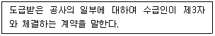
- 수급
- 하수급
- 도급
- 하도급
(정답률: 61%)
50. 다음 중 정보통신공사업의 용역업무와 거리가 먼 것은?
- 조사
- 설계
- 감리
- 시공
(정답률: 60%)
51. 다음 중 정보통신공사의 범위에 들지 않는 것은?
- 전기통신관계법령 및 전파관계법령에 따른 통신설비공사
- 방송법 등 방송관계법령에 의한 방송설비공사
- 정보통신관계법령에 의하여 정보통신설비를 이용하여 정보를 제어·저장 및 처리하는 정보설비공사
- 수전설비를 포함한 정보통신전용 전기시설설비공사 등 기타 설비공사
(정답률: 71%)
52. 다음 중 1년 이내의 기간을 정하여 정보통신공사업에 종사하는 정보통신기술자의 업무정지를 명할 수 있는 경우가 아닌 것은?
- 국가기술자격이 취소된 경우
- 동시에 2개 이상의 공사업체에 종사한 경우
- 타인에게 자기의 성명을 사용하여 용역을 수행한 경우
- 타인에게 경력수첩을 대여한 경우
(정답률: 78%)
53. 가공강전류전선의 사용전압이 특별고압일 경우의 이격거리에서 60,000[V]를 초과하는 것의 설명에서 맞는 항목은?
- 사용전압이 60,000[V]를 초과하는 10,000[V] 마다 12[cm]를 더한 값 이상
- 사용전압이 60,000[V]를 초과하는 10,000[V] 마다 24[cm]를 더한 값 이상
- 사용전압이 60,000[V]를 초과하는 20,000[V] 마다 12[cm]를 더한 값 이상
- 사용전압이 60,000[V]를 초과하는 20,000[V] 마다 24[cm]를 더한 값 이상
(정답률: 63%)
54. 접지공사시 접지 저항값이 10[Ω] 이하인 경우 접지선의 최소 규격으로 알맞은 것은?
- 직경 1.6[mm]
- 직경 2.6[mm]
- 직경 3.6[mm]
- 직경 5.6[mm]
(정답률: 37%)
55. 도로상 또는 도로로부터 전주높이의 1.2배에 상당하는 거리내의 장소에 설치하는 전주의 안전계수는?
- 1.1
- 1.2
- 1.5
- 1.6
(정답률: 71%)
56. 상용전원이 정지된 경우 최대부하전류를 공급할 수 있는 축전지 또는 발전기 등의 예비전원을 갖추어야 하는 구내교환설비는 국선 수용 용량이 몇 회선 이상인 경우에 요구되는가?(문제 오류로 정답이 정확하지 않습니다. 정답지를 찾지 못하여 임의 정답 1번으로 설정하였습니다. 정답을 아시는 분께서는 오류 신고를 통하여 정답 입력 부탁 드립니다.)
- 10회선
- 20회선
- 30회선
- 40회선
(정답률: 75%)
57. 통신관련시설의 접지체는 가스, 산 등에 의한 부식의 우려가 없는 곳에 매설하도록 하고 있는데, 그 깊이는 지표로부터 수직으로 몇 [cm] 이상이 되도록 요구되는가?
- 50[cm]
- 55[cm]
- 70[cm]
- 75[cm]
(정답률: 65%)
58. 해저통신선과 해저 강전류전선의 최소 이격거리(상호 근접하여 설치하여서는 안 되는 거리)는?(문제 오류로 정답이 정확하지 않습니다. 정답지를 찾지 못하여 임의 정답 1번으로 설정하였습니다. 정답을 아시는 분께서는 오류 신고를 통하여 정답 입력 부탁 드립니다.)
- 500[m]
- 600[m]
- 700[m]
- 800[m]
(정답률: 90%)
59. 다음 중 골조공사시 세대단자함의 재질 및 보강방법 등을 고려하여 설치하는 주된 이유는?(문제 오류로 정답이 정확하지 않습니다. 정답지를 찾지 못하여 임의 정답 1번으로 설정하였습니다. 정답을 아시는 분께서는 오류 신고를 통하여 정답 입력 부탁 드립니다.)
- 변형이 생기지 않도록 하기 위하여
- 세대 간의 층간소음을 줄이기 위하여
- 예비전원을 쉽게 가설하기 위하여
- 단지서버를 쉽게 설치하기 위하여
(정답률: 80%)
60. 방송통신설비가 갖추어야 할 안전성 및 신뢰성에 관한 기준 중 건축물, 시설 등에 염분으로 인한 장해를 입을 우려가 있는 곳에 방송통신 옥외설비를 설치하는 경우 마련하여야 하는 대책은?
- 동결대책
- 다습도 대책
- 염해대책
- 수해대책
(정답률: 83%)
전구 한 개에 걸리는 전압이 6[V]이므로, 전구 한 개의 저항을 R이라고 할 때 전류 I는 I = V/R = 6[V]/30[Ω] = 0.2[A]가 됩니다. 따라서 정답은 "0.2[A]"입니다.